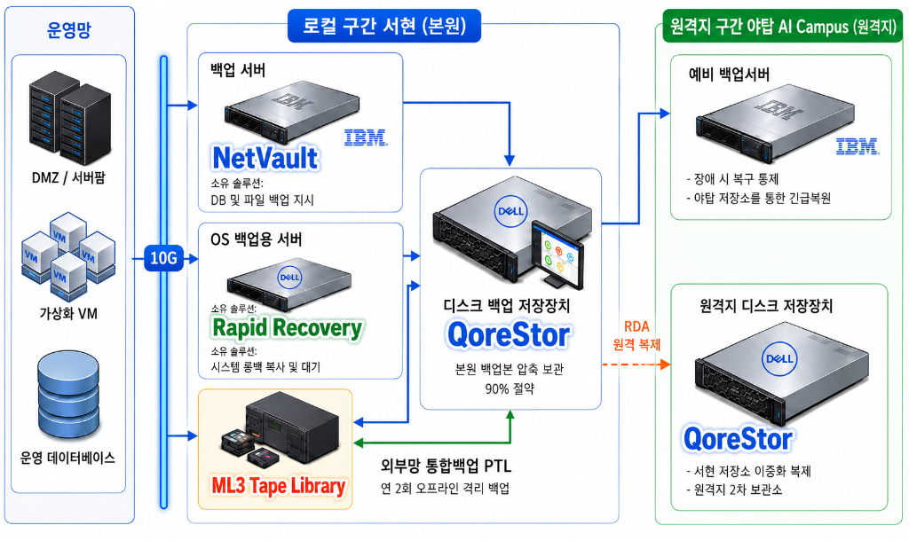
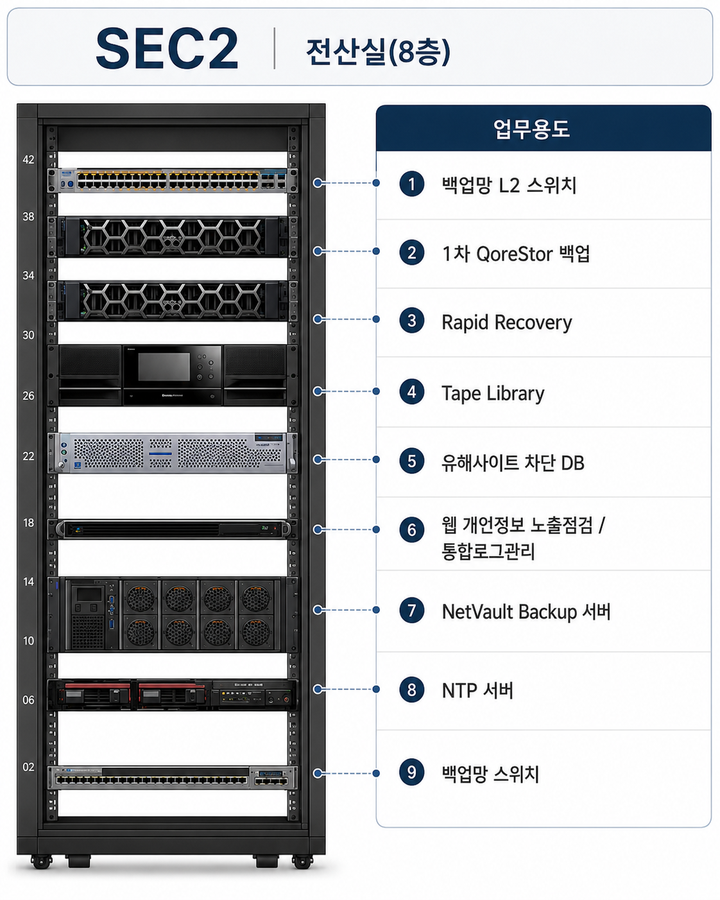

TTA 백업 세미나
도입 및 목차
세미나 소개 및 전체 진행 순서 안내
[슬라이드 1] 표지
백업 시스템 운영
발표자
경영지원실 AX지원팀 임진묵
Date
2026-07-21 (화)
[슬라이드 2] 오늘의 목차
백업의 개념과 정의
백업의 목적 및 방식(Full, Inc, Diff) 비교
백업은 왜 필요한가
3-2-1 방어 원칙
TTA 백업 인프라
아키텍처 구성 및 소프트웨어/스토리지의 역할
운영 현황
백업 완료/실패 자동 알림 및 실시간 모니터링 체계
마무리 및 안내
향후 재해복구(DR) 모의훈련 시행 계획
백업의 개념과 정의
[슬라이드 3] 주요 백업 방식 비교
🔄 쉽게 이해하는 백업 방식의 차이와 관계
백업은 항상 전체 데이터 원본인 '풀 백업'을 먼저 해두어야 시작할 수 있습니다. 이후 새로 데이터가 늘어날 때, 가장 최근 백업 시점 이후 늘어난 데이터만 보관할 것인가(증분), 아니면 마지막 풀 백업 시점 이후 늘어난 누적분을 보관할 것인가(차등)의 관계를 가집니다.
① 풀 백업 (Full Backup)
매일 전체 데이터를 통째로 복사
복원: 원하는 날짜의 백업 1개만 있으면 즉시 복원 (가장 단순·빠름 / 용량·시간 부담 큼)
② 증분 백업 (Incremental Backup)
직전 백업 이후 '바뀐 부분'만 백업
복원: 풀백업 + 그날까지의 모든 증분을 순서대로 적용 (용량·시간 최소 / 중간 1개만 손상돼도 이후 복원 불가)
③ 차등 백업 (Differential Backup)
마지막 풀백업 이후 '누적 변경분'을 백업
복원: 풀백업 + 가장 최근 차등 1개만 있으면 복원 (증분보다 복원 단순·안정 / 날이 갈수록 용량 증가)
[슬라이드 3 보충] TTA 실제 백업 운영 및 보관 정책 진화
🔄 전체(Full) 백업과 증분(Incremental) 백업의 활용
앞서 배운 기본 개념을 바탕으로, 우리 TTA는 원본 보장을 위한 '전체(Full) 백업'과 저장 효율이 뛰어난 '증분(Incremental) 백업'을 혼합하여 사용합니다.
과거 파편화된 보관 주기 정책에서 벗어나, 현재는 모든 주요 시스템의 백업본을 12주(약 3개월) 일괄 보관하는 상향 통합 정책을 적용해 랜섬웨어 등에 완벽히 대비하고 있습니다.
❌ 기존 기본 정책 (변경 전)
✅ 신규 통합 정책 (현재 운영)
📅 대상별 백업 실행 주기 스케줄 (주간 운영 정책)
백업은 왜 필요한가
[슬라이드 4] 오프닝 질문
"만약 전산실 화재, 정전 같은 재난 상황이나 외부 공격이 발생한다면,
우리는 언제까지, 얼마나 온전하게 복구할 수 있을까요?"
[슬라이드 5] 지역적 재난 대비: 원격지 소산 백업
본원 마비 시에도 데이터는 안전하게 보존됩니다
[슬라이드 6] 완벽한 백업을 위한 3-2-1 원칙
데이터 복사본 유지
원본 데이터 1개와
추가 백업본 2개
서로 다른 저장 매체
예: 디스크 스토리지
+ 테이프(Tape) 미디어
원격지 소산 보관
치명적 재난(화재/지진) 대비
물리적으로 떨어진 곳에 보관
[슬라이드 7] TTA의 3-2-1 방어 원칙 구현 현황
"그렇다면, 방금 말씀드린 랜섬웨어 위협 속에서 우리 TTA는 이 3-2-1 원칙을 어떻게 실제 시스템으로 완벽히 구현하고 있을까요?"
데이터 복제본 3개
- 1 운영 서버 (원본 데이터)
- 2 QoreStor (1차 디스크 백업본)
- 3 ML3 Tape (2차 오프라인 소산본)
서로 다른 매체 2개
-
1
디스크 스토리지 (Disk) 빠른 백업 및 즉각적인 복구 (QS)
-
2
테이프 미디어 (Tape) 안전한 장기 보관 및 물리적 격리 (ML3)
물리적으로 소산시킨 원격지 1곳
화재, 지진 등 본사(로컬)의 치명적인 재해에 대비하여 물리적으로 멀리 떨어진 원격지에 소산 보관합니다.
본사의 모든 데이터와 로컬 백업이 손상되더라도, 원격지 소산 백업본을 통해 100% 복구할 수 있습니다.
TTA 백업 인프라 아키텍처
[슬라이드 9] 주요 백업 솔루션의 역할
-
NVNetVault (파일/데이터 전담 백업) 회사에서 쓰는 중요한 문서 파일이나 데이터베이스를 **하나하나 골라서 안전하게 복사해 두는 프로그램**입니다.
-
RRRapid Recovery (컴퓨터 시스템 통째 백업) 컴퓨터의 모든 설정을 **통째로 사진 찍듯 복사해 두었다가**, 시스템 고장 시 **클릭 한 번으로 즉시 되살려주는 프로그램**입니다.
-
QSQoreStor (스마트 중복제거 저장소) 백업을 저장할 때, **중복되는 똑같은 내용을 하나만 남겨서 창고 자리를 90%나 아껴주는** 똑똑한 스토리지입니다.
-
ML3ML3 Tape Library (테이프 에어갭 방어) 데이터를 오프라인 테이프에 담아 네트워크와 완전히 분리(Air-Gap)시킴으로써, 랜섬웨어가 절대 감염시킬 수 없게 막아주는 **최후의 데이터 방어선**입니다.
[슬라이드 8] 인프라 아키텍처 흐름도
서현 본원과 야탑 AI Campus 간의 네트워크 구성도

[슬라이드 8-1] 서현 전산실 실장도
SEC2 (8층)서현 본원 전산실 내 백업 장비의 실제 물리적 배치 현황

운영 현황
[슬라이드 11] 백업 완료 자동 리포트 체계
모든 백업 작업이 정상적으로 종료되면 시스템에서 자동으로 "completed successfully" 결과 메시지와 함께 일일 백업 수행 내역이 정리된 리포트 메일을 발송합니다.

[슬라이드 12] 백업 실패 자동 알림 체계
작업 실패(Job failed) 감지 시 담당자에게 즉각적인 SMTP 경보 메일 발송

마무리 및 안내
[슬라이드 13] 재해복구 모의훈련 시행 계획
📅 7월부터 시나리오 작성 및 준비 단계 착수 ➡️ 9월 중 본격 모의훈련 수행
🗺️ 재해복구 모의훈련 프로세스 흐름도
서현 본원 데이터 유실 상황 모델링
Guest OS 생성 및 야탑 원격망 포트 점검
야탑 백업본을 가져와 정상 복구 시연
🎯 주요 훈련 내용
- • 가상 재난 상황 설정: 서현 본원에서 데이터가 완전히 유실되거나 손상된 최악의 시나리오 적용
- • 원격지 소산 백업 회복: 야탑 AI Campus(원격지) 백업본을 네트워크를 통해 전송받아 정상 복구되는지 검증
- • 복구 프로세스 시연: 데이터 복원 전 과정을 눈으로 직접 모니터링하며 상세하게 시연할 수 있도록 시각화 데모 구성
Q & A
질문이 있으시면 자유롭게 말씀해 주시기 바랍니다.